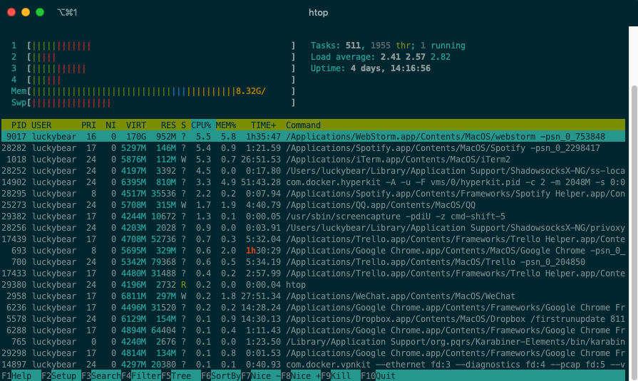
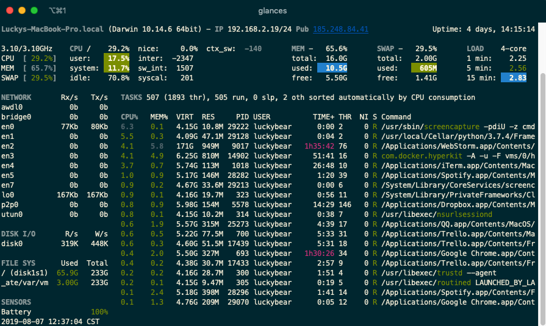

漫谈我对Linux监控软件的理解
谈谈我常用的监控软件
服务器的监控，在服务器运行过程中，会采集机器目前的状态信息，显示机器的运行状态，方便我们用来看机器目前运行是否正常。
如果出现问题了，可能是哪方面的问题。如果说用来耍帅，其实也是….凑合的。
我现在日常管理的环境基本上都是Linux，发行版以Centos居多，少量的ubuntu服务器。
在主机监控方面，我常用的有htop,glances,df,du,netstat等命令，结合起来看问题，但是算监控的话，应该只有前两个。
相对来说，我觉得监控软件用来查问题，是它日常使用中更偏重的一个方面。排查问题嘛。
服务器的监控软件，比如说zabbix或者prometheus这种东西来说，更注重的是对于服务器状态的收集，趋势的判断，服务的报警，再就是触发器的自动恢复。
更多的是用来查看趋势性的东西，比如说昨天晚上凌晨突然机器负载暴增，但是大家都睡觉了，想回溯现场，肯定是看监控软件了，采集的信息越多，就更容易排查问题。
日志监控的话，毫无疑问的就是ELK套件了，这个已经是事实上的行业标准了，没什么好说的，只是这版本帝刷版本刷的实在是有些略快。
因为说是漫谈，嗯…再者这东西也就是博客，关于一些具体的东西，我建议还是去官方文档看，这里也只是一些使用上的体会和简单的指北。
主机监控软件
简单来说，我在日常直接查看机器状态，会常用htop或者glances，这两个命令都不是系统自带的，都是需要使用包管理器来安装的。

这个是htop，其实也就是top这个Linux工具的升级版，看一些基础状态会比较合适。

这个是glances，显示的各种信息就比较全面了，比如说总的CPU占用和内存占用以外，还有IP、磁盘信息等。
这两个工具在mac下和linux下都是可用的，日常开发的过程中也可以很方便的使用。
服务器监控软件的对比
zabbix和prometheus对我来说都是比较常用的工具，对我来说，这两个监控软件是两种不同设计理念下出现的不同软件。
没有什么对比性，就像说什么比什么好一样，其实这个没啥好比的。prometheus连一个方便查看的界面都没有，只是专注于数据采集和报警。
所以说这种没啥好比的，如果下次大家遇见面试官问这种问题，也可以直接这么怼回去。
zabbix是一个历史比较长的监控软件了，所以优势也很明显，模板非常的全，NGINX、php-fpm、linux之类的，都可以直接使用默认的模板。
mysql的话，percona也出过非常好用的zabbix模板，redis也是用第三方的模板就可以来采集和报警了，更像是一个大一统的监控软件，自动发现功能，
还有触发器功能其实做的都很不错，如果是最传统的服务安装这种linux应用部署方面的监控，zabbix其实真的是不二之选，而且报警规则设置的都很详细。
越用其实就发现越省事儿….嗯，我没收好处费，使用起来感觉还是很香的。grafana也可以对接zabbix，出一个很好的界面之类的。虽然我现在也觉得不丑就是了。
zabbix最近出了一些新功能，我指的是4.2版本，比如说可以从prometheus的exporter里面取数据哇，或者还有那些趋势性指标什么的，也觉得这个软件活力还是很足的。
对于新功能也是紧跟时代，生命力还是很足的，配置触发器也很简单….关于怎么配置触发器，我觉得你还是看看官方文档，汉化的已经很全了。
….不知不觉写了这么多zabbix的好处，嗯，还真是有感而发哈，现在我就来说说zabbix相对来说的劣势好了，这也是我眼中的劣势，可能其他人会有不同意见。
zabbix因为使用的是mysql数据库，使用的不是时序数据库，监控数据这种东西，其实很适合放时序数据库里，放mysql里其实不是很合适。
而且zabbix对于目前(2019)年的容器时代和kubernetes时代，相对来说不是很合适，做宿主机的基础监控是没有问题的，但是做pods的这种业务监控，不是很合适了。
我个人建议也是zabbix留着做以前业务的监控，再就是新的k8s平台的基础监控，继续使用的价值还是很大的。
prometheus这个新生事物（现在好像已经不算太新生了）大家应该有所了解？属于CNCF组织推出的第二个云原生的组件，设计理念是只做日志采集和报警，
其余部分交给其他的东西来做，比如说图形化就是用grafana来做，监控的angent也是用第三方来做，数据保存也是用的时序数据库，很适合做容器化和大规模集群。
当然缺点也是很明显，相对来说上手难度高，报警指标需要自己设定，每个服务需要自己来找exporter，
没有触发器来做传统运维的自动恢复（前几天有人和我说也可以做，我还没了解）。
触发器的用处
前面提到了触发器，触发器这东西我觉得，对于传统运维来说，还是有一定用处的，可以做自动恢复，
就是那种开发写代码出现问题，但是这个问题又重复出现，而且开发也不能把这个问题彻底修复的情况，可以运维在这边给做一个兜底。
用触发器来做这些东西还是很合适的，对于prometheus就不能做这些了，因为已经把业务的状态维护交给了kubernetes，所以这块已经没有了.
我的体验
监控软件这些，属于查看Linux状态必备的一套工具。
对于运维这个岗位来说，更是吃饭的家伙，对于监控软件熟练掌握属于必备的技能。
利用软件提升自动化水平，利用自动化解放人力，把精力节省出来，做更值得投入精力的事情。
用自动化来解决重复劳动和体力劳动，这是软件对人的解放。